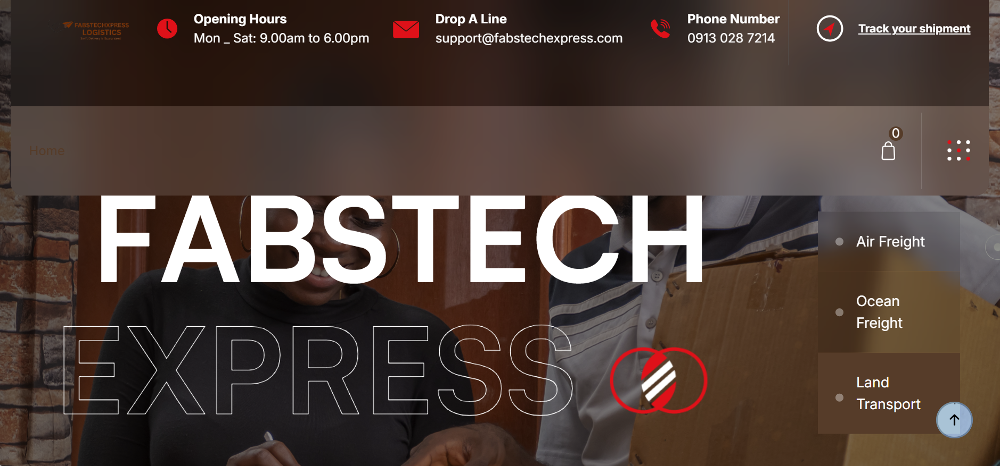

<div id="de_modal-content" class="container">
    <div class="row g-5">
        <div class="col-lg-8">
            
        </div>

        <div class="col-lg-4 de_project-info">
            <h3>FabstechExpress</h3>
            <p>A courier and last-mile delivery platform with rider dispatch, live order tracking, and a warehouse inspection workflow built for high-value package handling. It exposes a documented external API — rate calculation, order creation, and status webhooks — so third-party platforms can plug in their own deliveries directly. It's already doing that in production, powering fulfillment for AutoboyExpress.</p>

            <div class="de_project-details">
                <div class="d-field">
                    <i class="fa fa-user-o"></i>Client: <span>FabsTech Express</span>
                </div>
                <div class="d-field">
                    <i class="fa fa-file-text-o"></i>Type: <span>Full-Stack Development — Python, Flask, REST API</span>
                </div>
                <div class="d-field">
                    <i class="fa fa-calendar-o"></i>Year: <span>2026</span>
                </div>
                <div class="d-field">
                    <i class="fa fa-external-link"></i>Preview: <span><a href="https://fabstechexpress.com" target="_blank">fabstechexpress.com</a></span>
                </div>
            </div>
            <div class="spacer-30"></div>
            <blockquote>
                Every delivery moves through three verified checkpoints — seller pickup, warehouse inspection, buyer drop-off — with a rider portal and real-time status webhooks tying it together.
            </blockquote>
        </div>
    </div>
</div>
